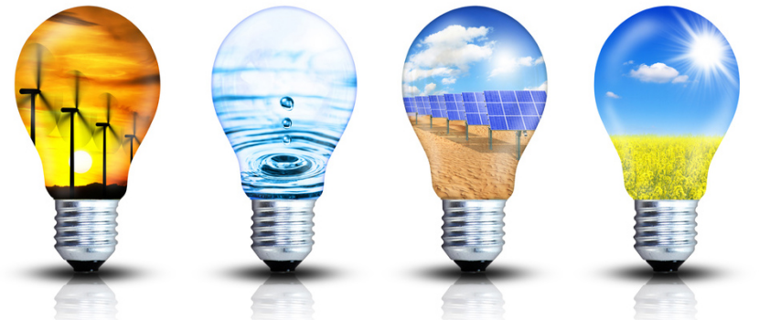

L’energia da biomasse è una forma di energia solare indiretta che può essere prodotta da materiale organici vegetali quali: legno, piante erbacee ed acquatiche , residui forestali , residui agricoli e industriali e rifiuti urbani. I processi di trasformazione prevedono la combustione , la massificazione , la pirolisi (per produrre bio-olio), la fermentazione e la digestione anaerobica (per produrre gas).
Possiamo ridurre le emissioni di gas a effetto serra puntando maggiormente sulle fonti di energia rinnovabile, quali il vento e l’energia solare, che garantiscono una fornitura infinita di energia, diversamente dai combustibili fossili, che prima o poi si esauriranno. Inoltre, diversamente dall’uso dei combustibili fossili nelle centrali, la generazione di elettricità da fonti rinnovabili produce quantità minime o addirittura nulle di gas a effetto serra.